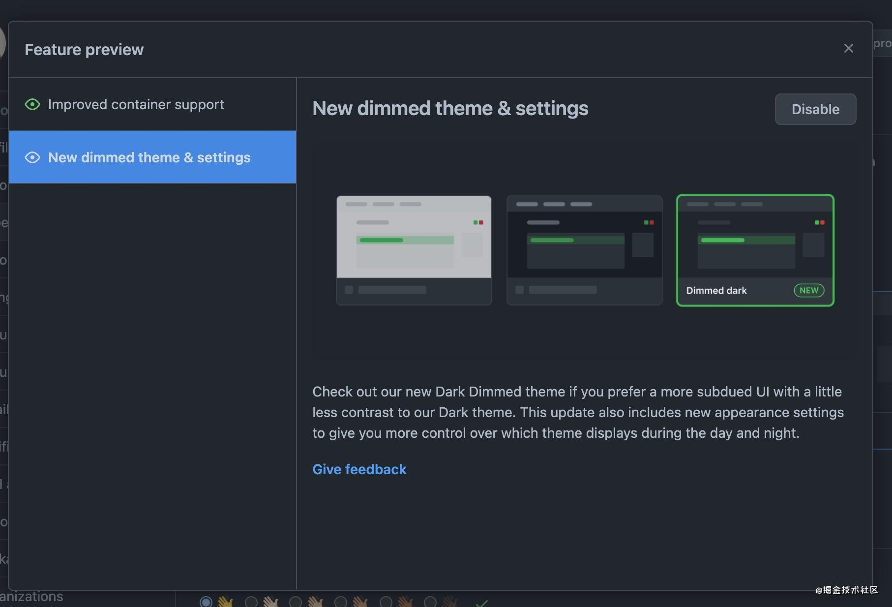
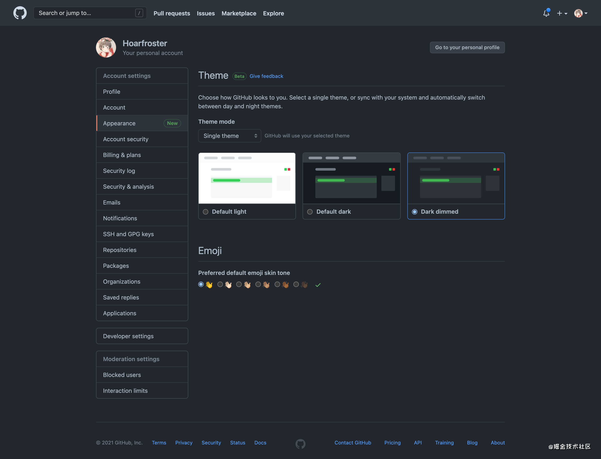

原文地址：GitHub Features Preview 标签：开发工具

如果你希望使用更柔和的，与 Dark 主题对比度稍低一些的 UI，请查收一下我们最新推出的 Dimmed Dark 主题。 本次更新还包括新的外观设置，帮助你可以更好地控制白天和黑夜显示哪些主题。
GitHub 主题又多了一个 —— 新的 Dimmed Dark 主题以及设置页面！
眼睛瞎了没！GitHub 是不是同性交友绝佳之处！
快让我们打开 Dark Theme/Dimmed Dark Theme 保护我们的眼睛叭～
打开方式：
- 点击头像
- 点击
Features Preview
- 点击
New dimmed theme & settings - 点击
Enable
效果如此：
